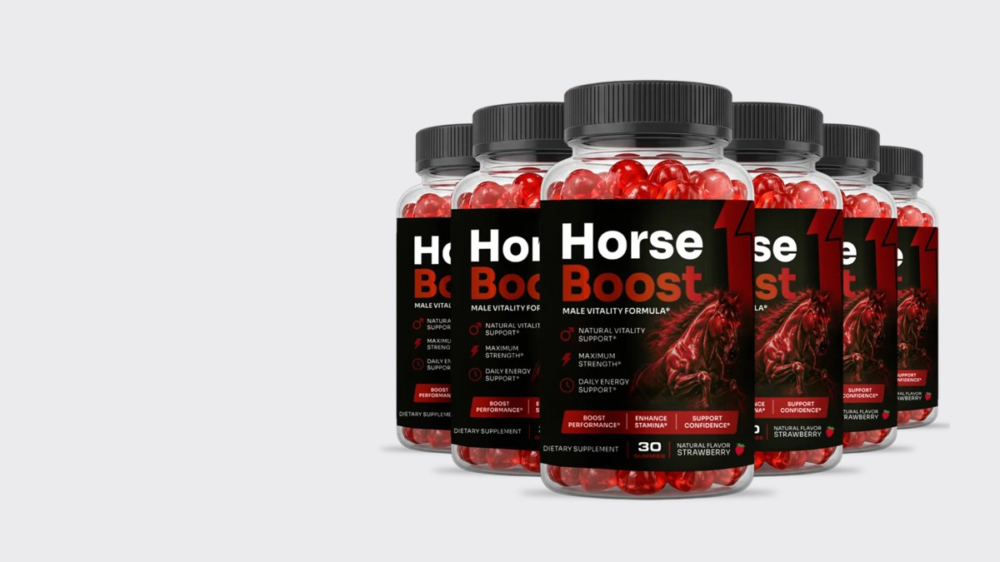
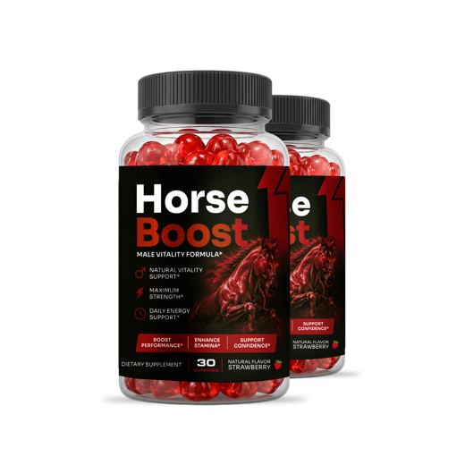
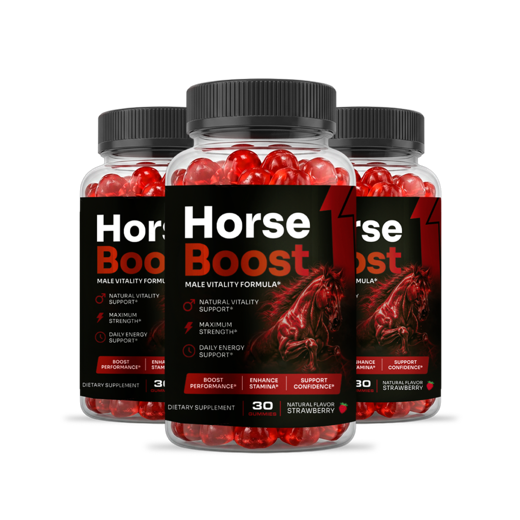

Horse Boost Review 2026: The Label, the Evidence and the Price
A strawberry gummy with nine traditional ingredients packed into 82 mg. We read the Supplement Facts panel line by line before deciding who it suits.

Key takeaways
- HorseBoost is a once-a-day strawberry gummy for men. Nine ingredients sit in one 82 mg proprietary blend, with 10 calories and 3 g of sugar per gummy.
- There's nothing equine in it. The horse is marketing. The formula is muira puama, maca, catuaba, green tea, caffeine, ashwagandha, L-arginine, tribulus and horny goat weed.
- The blend hides individual doses. Only caffeine (5 mg) is quantified, which means you can't check the other eight against research amounts.
- It's a vitality supplement, not an ED treatment. Nobody has run a clinical trial on the product itself, and it shouldn't replace a doctor visit.
- Cost runs about $1.63 to $2.63 a day depending on the pack, one-time charge, with a 60-day money-back guarantee on official orders.
Our Horse Boost review in one paragraph: HorseBoost is a strawberry gummy for men with an 82 mg blend of muira puama, maca, catuaba, green tea, 5 mg of caffeine, ashwagandha, L-arginine, tribulus and horny goat weed. The ingredients have traditional use and some small studies, but the doses are undisclosed and the product itself is untested.
That's the honest summary. It isn't a scam in the sense of hiding what's inside; the label prints every ingredient. It also isn't a pharmaceutical, and nothing on the panel justifies the idea that it works like a prescription drug. What follows is the full picture for anyone searching "horseboost review" or "horse boost reviews" before spending money.
We didn't take the gummy ourselves and we don't publish customer ratings, because we can't verify them. This review is built from the Supplement Facts label, the published research on each ingredient and the manufacturer's order page.

HorseBoost: check today's price
A once-daily strawberry men's vitality gummy with maca, muira puama, tribulus and horny goat weed. Sold only on the official site, with a 60-day money-back guarantee.
See the official price →What is Horse Boost, and why the horse?
Horse Boost (sold as HorseBoost on the bottle and order page) is a dietary supplement in gummy form, marketed as a "male vitality formula." The front of the bottle promises natural vitality support, daily energy support and stamina. You take one strawberry-flavored gummy a day, and each bottle holds 30.
The name suggests something from a stable. It isn't. There's no horse-derived ingredient, no equine hormone and nothing borrowed from veterinary products. The galloping horse on the label is branding meant to signal strength and stamina. Every ingredient is a plant extract, an amino acid or caffeine.
The distributor printed on the label is Instituto Experience of Lakeland, Florida. The bottle says it's made in the USA with globally sourced ingredients and produced in a GMP facility, which refers to the FDA's current good manufacturing practice rules for supplements. GMP covers how a product is made and labeled. It says nothing about whether the formula works.
Who is it aimed at? Men, typically over 35, who feel flatter than they used to: less energy in the afternoon, less interest, less drive at the gym. That's a real and common experience. It also has many possible causes, from poor sleep and weight gain to medication and hormones, and a supplement only touches a small slice of them.
How you take it is simple. One gummy a day, any time, with or without food. The label says to store it at room temperature (59 to 86 F) with the cap tightly closed, and not to use it if the seal under the cap is broken or missing. That last line matters more than it looks, and we come back to it in the side effects section.
What's in a HorseBoost gummy?
Here's the Supplement Facts panel as printed at the time of writing. Formulas can change between batches, so compare it against the bottle you receive.

| Label line | Per gummy | What it is |
|---|---|---|
| Calories | 10 | Mostly from the sugar base |
| Total carbohydrate / sugar | 3 g / 3 g (all added) | Corn syrup and cane sugar |
| Sodium | 4 mg | Under 1% of the daily value |
| Proprietary blend | 82 mg total | Nine ingredients, individual amounts not disclosed |
| Caffeine (inside the blend) | 5 mg | The only quantified active |
| Other ingredients | Not quantified | Corn syrup, cane sugar, water, apple pectin, sorbitol, natural flavors, citric acid, sodium citrate |
The blend lists, in this order: muira puama extract, maca extract, catuaba extract, green tea extract, caffeine (5 mg), ashwagandha, L-arginine, tribulus terrestris and horny goat weed extract. A footnote says the blend is "equivalent to approximately 567 mg of dry powders," a line we explain below. For a deeper look at each one, see our Horse Boost ingredients breakdown.
Is 82 mg enough to do anything?
This is the question that decides the whole review. Eighty-two milligrams is roughly the weight of a few grains of rice, and it's shared by nine ingredients.
FDA labeling rules require the parts of a proprietary blend to be listed in descending order by weight. Caffeine is fifth, at 5 mg. If the label follows that rule, every ingredient after caffeine (ashwagandha, L-arginine, tribulus and horny goat weed) is present at 5 mg or less. The first four, led by muira puama, share the remaining 57 mg or more.
Compare that with the amounts studied in human trials. Maca is usually tested at 1,500 to 3,000 mg a day. Ashwagandha trials use 300 to 600 mg of extract. L-arginine studies use grams, not milligrams. Even allowing for concentrated extracts, the gap is large.
What about the 567 mg footnote? It means the extracts were made from about 567 mg of raw dried plant material. Concentration can make that fair for some botanicals, since a 10:1 extract carries more of certain compounds per milligram. It doesn't apply to caffeine or L-arginine, which aren't extracts, and the label doesn't say which ratio applies to which herb. So the footnote is real information, but it doesn't close the dose gap.
What does the research say about these ingredients?
Ingredient evidence isn't product evidence. With that said, here's where each component stands in the published literature.
- Maca: the strongest case in the blend. A few small randomized trials found modest improvements in self-reported sexual desire after 6 to 12 weeks at 1.5 to 3 g a day. It doesn't appear to change testosterone.
- Ashwagandha: several trials show reduced perceived stress at 300 to 600 mg daily, and a handful of small studies in men report changes in testosterone or vigor. Our ashwagandha guide covers the stress research.
- Tribulus: very popular in men's products. Reviews of the trials conclude it doesn't raise testosterone in healthy men; libido data are mixed.
- Muira puama and catuaba: Brazilian barks with long folk use as tonics. Human data are close to nonexistent beyond old, small reports.
- Horny goat weed: contains icariin, which acts on blood-vessel enzymes in lab studies. Controlled human trials are lacking.
- L-arginine: a nitric oxide building block studied at several grams a day. At 5 mg or less, it's a label entry rather than a dose.
- Green tea and caffeine: 5 mg of caffeine is about a twentieth of a cup of coffee. Expect no noticeable stimulant effect from that alone.
Put plainly, maca and ashwagandha give the formula its credibility, and neither is likely present at a studied amount. Our longer look at whether Horse Boost works goes through this in detail.
One more point that buyers rarely hear. Sexual-function and energy studies have unusually large placebo responses. In many trials, a meaningful share of men taking the dummy pill report feeling better. That's why a single good week on any supplement tells you very little, and why controlled trials matter so much in this category.
What we couldn't verify: the extract ratios, the source of each herb, whether a batch has been tested by an independent lab, and how much of each ingredient survives in a gummy over its shelf life. None of that is on the label or the order page. Products sold online rarely publish it, but it's fair to note what's missing.
How much does Horse Boost cost per day?
The manufacturer sells three packages. At the time of writing, the official page lists them as follows. Prices change, so treat these as a snapshot.

2 Bottles · Starter $79/bottle Check Availability → + $9.99 shipping
6 Bottles · Best Value
$49/bottle
Claim Discount →
Free US Shipping

3 Bottles · Popular $69/bottle Claim Discount → Free US ShippingPrices shown are the manufacturer's published rates at the time of writing and can change without notice.
| Package | Total | Gummies | Cost per day |
|---|---|---|---|
| 2 bottles | $158 plus shipping | 60 | $2.63 before shipping |
| 3 bottles | $207, free US shipping | 90 | $2.30 |
| 6 bottles | $294, free US shipping | 180 | $1.63 |
The charge is one-time. There's no subscription and no autoship on the official order page. The six-bottle pack has the lowest daily cost, but it's also the largest bet on a product you haven't tried. If you're unsure, the two- or three-bottle option lets you test it inside the guarantee window. Our Horse Boost price guide, linked below, runs the math in more depth.
What is the Horse Boost refund policy?
Orders through the official checkout carry a 60-day money-back guarantee. Read the exact steps on the order page before you buy, because the details (who pays return shipping, whether opened bottles qualify) are set by the seller and can change.
A few habits make a refund easier. Keep your order confirmation email. Note the delivery date on a calendar, since the window is counted in days. Hold on to the bottles, including empty ones. And buy only from the official page; third-party listings usually aren't covered.
Horse Boost side effects: who should skip it?
At these amounts, most people won't notice much. The gummy base is the most predictable part: 3 g of added sugar and a little sorbitol, which can loosen stools in sensitive people when eaten in quantity.
Skip it, or talk to a doctor first, if any of these apply:
- You take nitrates, erectile dysfunction medicine or blood pressure drugs (L-arginine and horny goat weed act on blood vessels, even if the amounts here are small).
- You're sensitive to caffeine or already take a lot of it.
- You have a thyroid condition, autoimmune disease or liver problems (ashwagandha cautions).
- You have diabetes and count every gram of sugar.
- You're under 18, which the product isn't meant for.
The full list, including the FDA's warnings about tainted male enhancement products, is in our Horse Boost side effects guide.
When should you see a doctor instead?
If erection problems are new, getting worse or persistent, a doctor visit comes first. Erectile dysfunction is often an early warning sign of heart disease, because the arteries in the penis are smaller than those in the heart and show narrowing sooner. It can also point to diabetes, low testosterone, sleep apnea or a medication side effect.
A gummy can't tell you any of that. A checkup with blood pressure, blood sugar and cholesterol tests can. Our article on low testosterone in men lists the symptoms worth mentioning to a physician.
Is Horse Boost the same as Vigor Boost?
Nearly. Vigor Boost and HorseBoost share the same 82 mg blend with the same nine ingredients in the same order. The differences are small: HorseBoost has 5 mg of caffeine and 3 g of sugar with strawberry flavor, while Vigor Boost has 10 mg of caffeine and 2 g of sugar. They're sold by different distributors under different brands.
If one of them works for you, the other is unlikely to work much differently. Pick on flavor, caffeine preference and price.
Horse Boost pros and cons
Pros
- Every ingredient is printed on the label.
- Includes maca and ashwagandha, the two best-studied components.
- Low caffeine, so it won't keep most people awake.
- One gummy a day, no pills to swallow.
- One-time charge with a 60-day money-back guarantee.
Cons
- Proprietary blend: no individual doses except caffeine.
- 82 mg total is far below the amounts used in research.
- No clinical trial of the product itself.
- 3 g of added sugar per gummy.
- The marketing name implies more than the label delivers.
Our verdict: is Horse Boost worth it?
Horse Boost is a legitimate, clearly labeled supplement with a weak case for doing much. The ingredient list reads well. The quantities don't. If you want a low-stimulant daily gummy built on traditional men's herbs and you value the 60-day guarantee as a safety net, it's a reasonable small experiment.
If you're dealing with real erection problems, though, skip the experiment and book an appointment. That's the faster route to an answer, and it rules out the conditions that matter most. The basics also do more than any blend: regular exercise, enough sleep, less alcohol and treating snoring or sleep apnea. Exercise and sleep research covers why those habits pay off well beyond the bedroom. For broader context on energy and men's health, browse our men's health section.
HorseBoost: check today's price
A once-daily strawberry men's vitality gummy with maca, muira puama, tribulus and horny goat weed. Sold only on the official site, with a 60-day money-back guarantee.
See the official price →Frequently asked questions
Is Horse Boost a scam?
Not in the sense of hiding its contents. The label prints every ingredient, the charge is one-time and there's a 60-day money-back guarantee on official orders. The weak point is evidence, not honesty: the blend is small and the product has no clinical trial.
Is HorseBoost made from horses?
No. There's no animal-derived active ingredient. The horse is a marketing image. The gummy is gelled with apple pectin, and the actives are plant extracts, L-arginine and caffeine.
How fast does Horse Boost work?
There's no product data to answer that. The ingredient studies that showed effects, mainly maca and ashwagandha, ran for 6 to 12 weeks at much higher doses. Anyone promising effects within minutes is describing a drug, not this supplement.
Can I take Horse Boost with coffee?
For most healthy adults, yes. One gummy has 5 mg of caffeine, a small fraction of a regular cup of coffee. If you're caffeine-sensitive or have a heart rhythm problem, count it anyway.
Is Horse Boost sold on Amazon or in stores?
The manufacturer sells it through its official site. Listings elsewhere may be resellers or copies and usually aren't covered by the 60-day guarantee.
Can women take HorseBoost?
It's formulated and labeled as a male vitality product. The label also warns against use during pregnancy or nursing without a doctor's advice.
Will Horse Boost raise testosterone?
There's no evidence that it does. Tribulus, a common testosterone-marketing herb, hasn't raised testosterone in healthy men in controlled trials, and maca doesn't appear to change hormone levels. If you suspect low testosterone, a blood test is the way to find out.
Read the label. Then decide.
HorseBoost prints its full ingredient list and backs official orders with a 60-day money-back guarantee. Check today's package prices on the official page.
See HorseBoost's official price →Related: